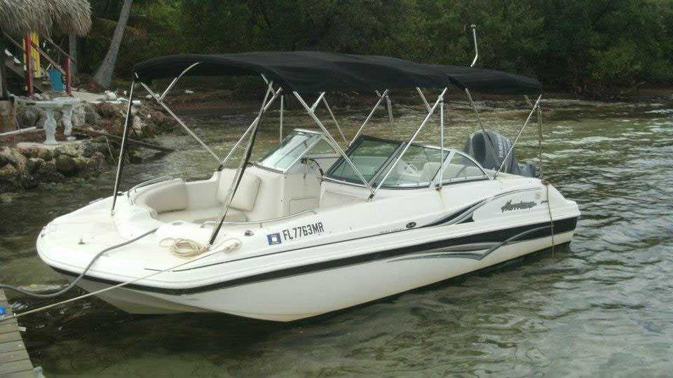
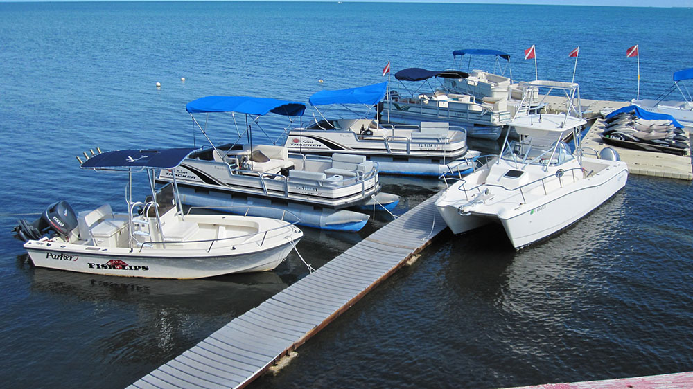

Welcome to Pier 68
Contact Us
305.664.2238 or 239.297.4504
email us: jaydz@live.com
Open 9:00 to 5:00 Weather Permitting
Thank you for checking out Pier 68 Boat Rentals. We specialize in center console, pontoon boat, deck boat and fishing boat rentals. Our family has been renting boats since 1986. We offer daily rates as well as multi day discounts and weekly rates. We also have reasonable monthly rates during the winter for our snowbird friends.
At Pier 68 all of our boats are equipped with a fuel efficient Yamaha four stroke outboard motor. Each boat also has a ladder for getting in and out of the water. For navigation every Pier 68 rental boat is equipped with a color gps/chartplotter. Our deck boats and pontoon boats feature a bimini top for maximum shade and our fishing boats have a t-top for 360' fishibility. Most fishing boats are also equipped with a live bait well. Rod/reel rentals as well as frozen bait is available.
Our pontoon boat rentals accommodate up to 10 people for a fun day of snorkeling, fishing, or just plain boating the waters of the Florida Keys.
The fishing boats can get you to our great Florida Keys fishing spots by going under the Long Key Bridge, and you are fishing the Atlantic Ocean within 10 minutes of leaving our dock.
Kayak fun for the family is also available at our rental business, Pier 68. Pier 68 also rents quality single and tandem sit on top kayaks by the day, week or month. Kayak delivery is available and our rates are rock bottom. Our staff will get you set-up with all your paddles and lifejackets.
Boats
">Pontoon boat rentals from Pier 68 are lots of fun. We have several sizes to accommodate your budget and the number of people in your party. Boat rentals in the Florida Keys are mostly center console boats, which we also rent, but at Pier 68 we offer you an extra fun boat rental - a pontoon boat. Easy to get on and off, these pontoon boats have ladders, cushion seating, and canvas top for protection from the sun.
Add the snorkel gear or fishing gear to your FL Keys boating excursion and you'll have a great day. Pier 68 is located off US 1 at mile marker 68, bayside, in the city of Layton, Long Key, Middle Florida Keys. We are close to Hawks Cay Resort at Duck Key, Conch Key, and Grassy Key for boat rentals. We are just east of the Long Key Bridge. Navigate under the Long Key Bridge and you are on the Atlantic side of the Florida Keys.
The Tennessee Reef is a great destination for snorkeling or fishing. Also, the Atlantic side has a closer patch of coral reef which is called Coffins Patch. Ask our friendly staff for directions to these great snorkeling spots in the Florida Keys when you rent your pontoon boat. Pier 68 gives you a chart for help in navigating our Florida Keys waters.
Our pontoon boats are limited to the bayside (our deck boats offer the seats, bimini and comfort of the pontoon and can cruise to the Oceanside's reefs).
Come rent a pontoon boat from the friendly, family owned rental business, Pier 68. We have the cheapest boat rental prices in the Florida Keys!
<<<<<<< HEAD
| Center Console | Full day: | 2-3 days: | 4-6 days: | Week: | |
|---|---|---|---|---|---|
| 19' | $199 | $179/day | $159/day | $975 | |
| 21' | $249 | $225/day | $199/day | $1200 | |
| 23' | $299 | $275/day | $249/day | $1500 | =======
| >>>>>>> e667c8d556689cf855026bafbd0870fc36d6f991 |